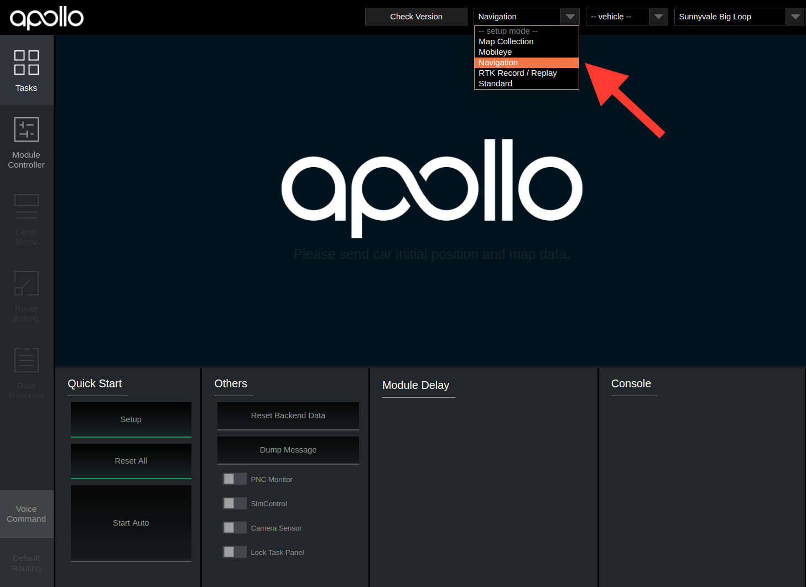

Apollo 5.0 Quick Start Guide
The following guide serves as a user manual for launching the Apollo upgraded software and hardware stack on vehicle.
This Quick Start Guide focuses on the new features. For general Apollo concepts, please refer to Apollo 3.5 Quick Start
Contents
Calibration Guide
Apollo currently offers a robust calibration service to support your calibration requirements from LiDARs to IMU to Cameras. This service is being offered to selected partners only. If you would like to learn more about the calibration service, please reach out to us via email: apollopartner@baidu.com
Hardware and Software Installation
The Hardware setup for Apollo 5.0 remains the same as Apollo 3.5, please refer to Apollo 3.5 Hardware and System Installation Guide for the steps to install the hardware components and the system software, as well as Apollo Software Installation Guide.
Dreamview Usage Table
For questions regarding Dreamview icons refer to the Dreamview Usage Table. For questions regarding Dreamland and the scenario editor, please visit our Dreamland Introduction guide
Onboard Test
Plug-in an external hard-drive to any available USB port in the host machine
Turn on the vehicle, and then the host machine
Launch the Dev Docker Container
Launch DreamView
Note: Use your favorite browser to access Dreamview web service in your host machine browser with URL http://localhost:8888

Select Mode, Vehicle and Map

Note: You’ll be required to setup profile before doing anything else. Click the dropdown menu to select Navigation mode, the HDMap and vehicle you want to use. The lists are defined in HMI config file
Note: It’s also possible to change the profile on the right panel of the HMI, but just remember to click
Reset Allon the top-right corner to restart the systemStart the Modules.
Click the
Setupbutton
Go to Module Controller tab, check if all modules and hardware are ready (Note: In your offline environment, the hardware modules such as GPS, CANBus, Velodyne, Camera and Radar cannot be brought up) (Note: You may need to drive around a bit to get a good GPS signal)

Under
Default Routingselect your desired routeUnder Tasks click
Start Auto. (Note: Be cautious when starting the autonomous driving, you should now be in autonomous mode)
After the autonomous testing is complete, under
TasksclickReset All, close all windows and shutdown the machineRemove the hard drive